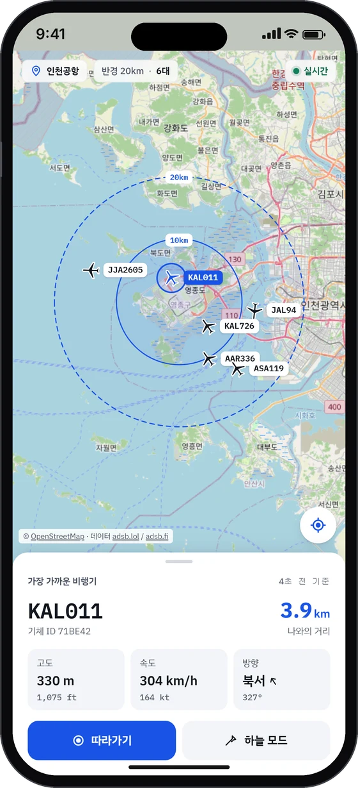
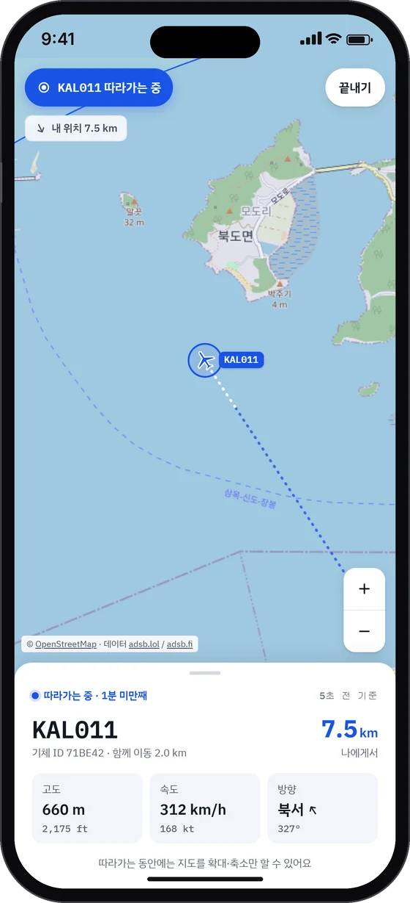
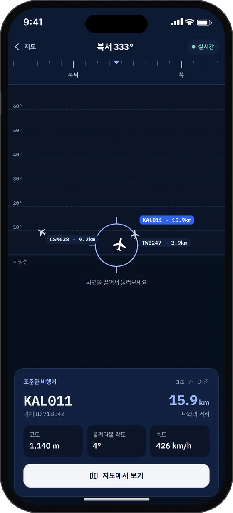

사이드 프로젝트, 2026.11, 기획부터 배포까지 1인
내 위치 상공 반경 20km를 지나는 비행기를 지도 위에 실시간으로 보여주는 웹 서비스
React, TypeScript, Vite, Leaflet, Zustand, MQTT(mqtt.js, Aedes), Express, Turborepo, Vitest, GitHub Actions, Vercel, Render
- 개요
- 공개 항공 데이터(ADS-B)를 서버가 모아 MQTT로 발행하고, 브라우저가 지도 위에 실시간으로 그리는 1인 사이드 프로젝트
- 임팩트
- 약 6초 간격으로 들어오는 위치 데이터를 끊김 없는 움직임으로 보여주고(예측 위치와 실제 위치 차이 7~80m), 보는 사람이 늘어도 외부 API 요청은 5초에 약 1번으로 고정했습니다.



왜 만들었나
"지금 내 머리 위로 지나가는 비행기는 뭘까?
어디를 봐야
보일까?"
하늘을 올려다보다 생기는 이 궁금증에, 설치 없이 링크 하나로 바로 답하고 싶었습니다. 그래서 내 위치 기준으로 주변 비행기를 지도에 보여주고, 폰을 들면 어느 방향을 봐야 하는지 알려주는 서비스를 만들었습니다.
그리고 더 큰 이유
지도 위에서 실시간으로 움직이는 관제 화면을 작게 줄여 직접 만들어 보고 싶었습니다. 처음 써 보는 MQTT도 문서가 아니라 실제 서비스로 익히고 싶었습니다.
| 이 프로젝트 | 관제 플랫폼에서는 |
|---|---|
| 비행기 여러 대를 지도에 실시간 표시 | 다중 모빌리티 위치·상태 시각화 |
| 0.1도 격자별 MQTT 토픽 구독 | 운행 구역별 데이터 구독 |
| retained 메시지 | 화면을 연 즉시 마지막 상태 표시 |
| 따라가기 | 특정 기체 추적·모니터링 |
| 신호 끊김, 예측 상한, 착륙 판단 | 통신 두절, 상태 불확실, 임무 종료 표시 |
| 예비 소스 자동 전환, 백오프 | 데이터 소스 장애 대응 |
끊긴 데이터를 보여 주는 법
관제 화면에서 가장 위험한 건 끊긴 대상을 살아 있는 것처럼 보여 주는 것입니다. 데이터가 오는 사이, 데이터가 끊긴 뒤, 끝내 오지 않을 때를 나눠 데이터, UI, 기획으로 풀었습니다.
데이터가 오는 사이: 직접 비교해 보기
데이터는 약 6초마다 도착합니다. 그 사이를 속도, 방향, 선회율로 예측하고, 새 데이터가 오면 1초에 걸쳐 합류시켰습니다. 매 프레임 React state를 바꾸지 않고 requestAnimationFrame에서 마커를 직접 옮깁니다.
받은 위치만 그릴 때
예측 + 1초 합류
예측에 상한 두기
- 문제
- 착륙 직전에 신호가 끊기면 예측이 계속 이어져, 비행기가 공항을 지나쳐 날아가 보였습니다.
- 한 일
- 고도별로 예측을 믿을 시간을 정했습니다. 지면 근처 3초, 3000ft 아래 20초, 따라가기 중에는 3분입니다.
- 결과
- 신호가 끊긴 기체가 엉뚱한 곳으로 계속 날아가 보이지 않습니다.
멈출 때도 자연스럽게
- 문제
- 상한에서 딱 멈추면 화면이 뚝 끊겨 보였습니다.
- 한 일
- 상한에 닿으면 2초 동안 서서히 멈추게 했습니다.
- 결과
- 예측을 멈추는 순간에도 움직임이 튀지 않습니다.
사실과 추정을 구분해서 보여 주기
- 문제
- 받은 위치와 예측 구간을 같은 선으로 그리면 추정이 사실처럼 보였습니다.
- 한 일
- 따라가기 꼬리에서 실제로 받은 위치는 파란 점선, 마지막 수신 위치부터 지금 예측 위치까지는 흰 점선으로 그렸습니다.
- 결과
- 사용자가 어디까지가 데이터이고 어디부터가 추정인지 알 수 있습니다.
데이터가 끝내 오지 않을 때: 착륙 판단
- 문제
- 공항 지상은 수신이 약해 "지상에 있음" 신호가 끝내 오지 않는 경우가 많았습니다. 데이터만으로는 착륙인지 신호 끊김인지 알 수 없었습니다.
- 한 일
- 지상 신호를 받거나, 공항 15km 안·2000ft 아래에서 1분 넘게 끊기면 착륙으로 확정합니다. 착륙한 기체는 더 예측하지 않습니다.
- 한계
- 이륙 직후 같은 조건이면 착륙으로 잘못 볼 수 있다는 걸 알고 있습니다.
직접 바꾼 판단
AI(Claude Code)에게는 대안과 장단점만 받고, 결정은 직접 내려 기획서에 기록했습니다. 결정을 바꾼 이유는 모두 직접 써 보며 확인한 문제였습니다.
-
기본 위치를 송파구에서 인천공항으로
위치 권한을 거절한 사람은 빈 지도를 보게 되는 문제. 비행기가 가장 많이 지나는 곳으로 바꿔, 누가 열어도 움직이는 비행기를 보게 했습니다.
-
격자마다 조회하던 방식을 지역 통째 조회로
보는 사람이 늘수록 외부 요청이 늘어 호출 제한(429)에 걸렸습니다. 한반도를 한 번 조회해 격자마다 나눠 발행하도록 바꿔, 요청 수가 사용자 수와 상관없게 만들었습니다.
-
따라가기 조회 간격 5초 → 10초 → 다시 5초
끊김을 줄이려고 늘렸지만, 선회 중 예측 오차가 약 4배 커져 10초마다 화면이 옆으로 끌렸습니다. 직접 따라가 보며 확인하고 되돌렸습니다.
-
착륙 화면을 경고에서 탑승권 카드로
따라가던 비행기가 착륙하면 경고처럼 보이는 종료 화면이 떴습니다. 여정을 마무리하는 순간으로 보이도록 출발 → 도착 공항, 함께한 시간, 함께 이동한 거리, 최고 고도를 담은 탑승권 카드로 바꿨습니다.
그 외 주요 구현
위에서 다루지 않은 구현만 정리
예비 소스 자동 전환과 백오프
메인 소스가 실패하면 예비 소스로 같은 요청을 재시도, 둘 다 실패하면 5 → 10 → 20 → 40 → 60초로 간격을 늘림
소수점 픽셀 카메라 (따라가기)
비행기는 1초에 약 2px 움직이는데, 지도를 정수 픽셀로만 옮기면 0.5초 멈췄다가 1px 툭 움직이는 문제. setView → 정수 픽셀 panBy → 소수점 픽셀 이동(Leaflet 내부 _rawPanBy)으로 바꿔 0.1초마다 약 0.18px씩 매끄럽게 이동, 비행기는 화면 가운데에 고정
선회 예측
선회율(track_rate)이 있으면 직선 대신 원호로 예측(최대 30초), 아이콘도 예측 방향으로 함께 회전. 직선 예측은 선회 중 수백 m씩 어긋남
하늘 모드: 기기 센서와 권한
폰이 향한 방위를 iOS는 webkitCompassHeading, Android는 북쪽 기준 절대 방향 센서 값으로 계산. iOS 센서 권한은 "센서 켜고 시작하기" 버튼 클릭 안에서 요청. 거부·미지원이거나 3초 안에 나침반 값이 없으면 끌어서 둘러보기로 전환, 기기별 켜는 방법과 다시 시도 안내
코드 분할과 캐시
하늘 모드와 따라가기 화면은 필요할 때 로드(첫 화면 3초 뒤 미리 받음), 라이브러리는 react, map, mqtt, vendor 파일로 분리. 한 파일 776KB → 우리 코드 49KB(gzip 16.5KB). 우리 코드만 바뀐 배포에서는 재방문 브라우저가 라이브러리를 캐시에서 사용
오류 처리
화면 오류 시 빈 화면 대신 안내와 새로고침 표시(ErrorBoundary). MQTT 연결 생성 중 오류가 나도 앱이 멈추지 않음
시계 보정과 위치 개인정보
스냅샷을 받을 때 "내 시계 - 서버 시계"를 기억해 기기 시계가 틀려도 예측이 어긋나지 않게 보정. 정확한 위치는 브라우저 안에서만 쓰고, 서버에는 0.1도로 반올림한 격자만 전송
돌아보며
이번 프로젝트에서 느낀 점
실시간 데이터에는 신경 쓸 것이 많았습니다. 끊긴 데이터를 어떻게 보여줄지, 6초 사이를 어떻게 채울지부터 서버 부하와 API 호출 비용까지 함께 고민해야 했습니다.
기술만으로 풀기 어려운 부분은 UI와 기획으로 풀었습니다. 사용자가 끊김을 느끼지 않는 경험을 만드는 것까지가 제 일이라고 생각하며 계속 다듬을 예정입니다.
앞으로의 계획
-
진행 중
따라가기를 더 부드럽게
카메라 끊김은 소수점 픽셀 이동으로 줄였고, 가끔 남는 아이콘·편명 흔들림의 원인을 찾는 중
-
다음 기능
출발지와 도착지
편명과 현재 상태를 넘어, 이 비행기가 어디서 와서 어디로 가는지 표시
-
검토
더 많은 대상
수백, 수천 대로 늘어날 때를 대비해 마커 DOM 대신 Canvas나 WebGL 렌더링 검토
-
고민 중
고도와 상태 구분
비행기마다 고도와 상태를 한눈에 구분할 수 있는 UI 고민 중
-
고민 중
첫 접속 대기
무료 서버라 첫 접속에 1분 가까이 걸리는 문제를, 기다리는 시간을 보여 주는 방식까지 포함해 고민 중